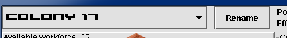
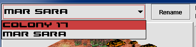
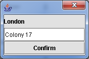

Colony selection and rename
Other colonies can be selected and displayed from the list without closing the colony screen.


Rename button can be used to change the name of the currently selected colony.
